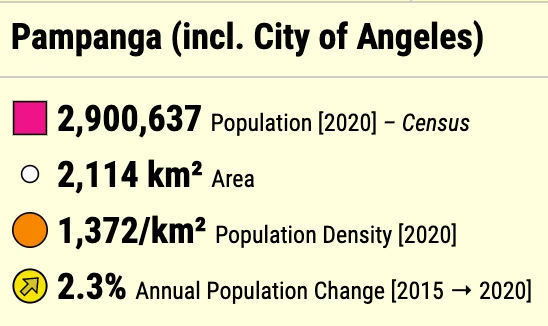
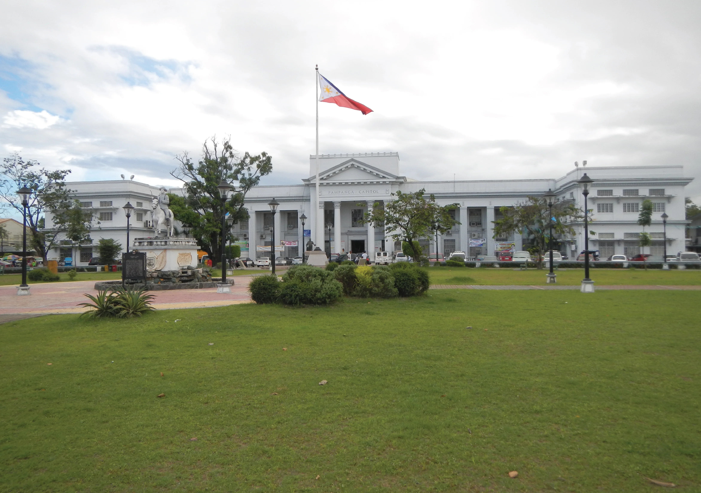
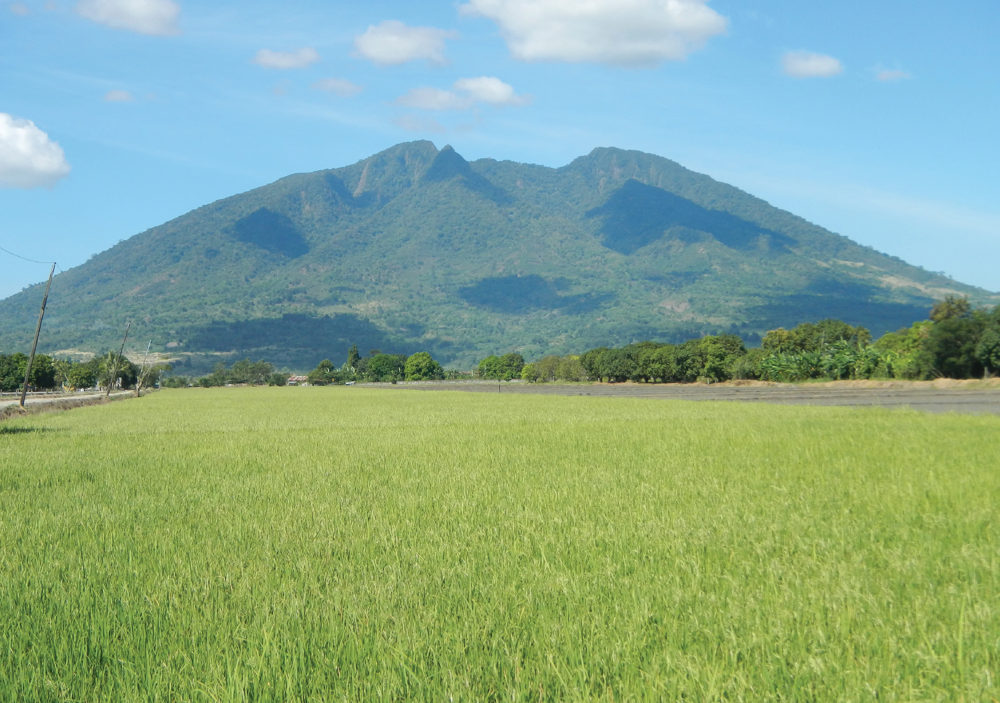
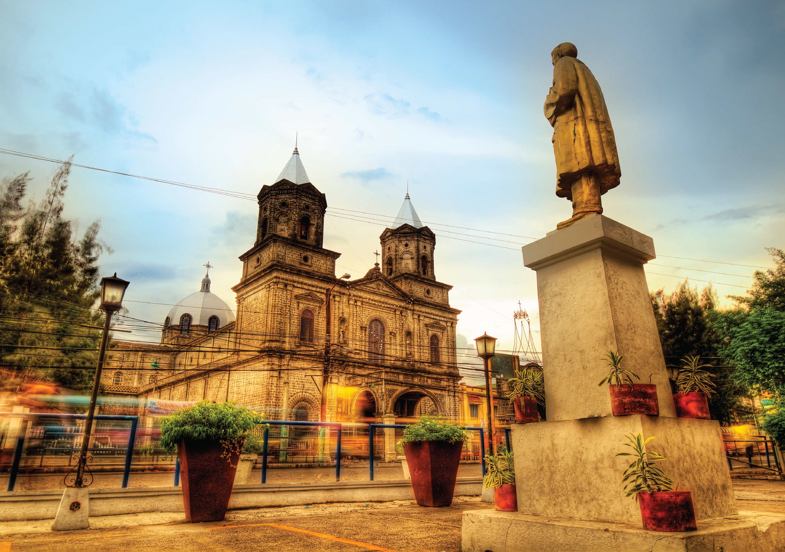
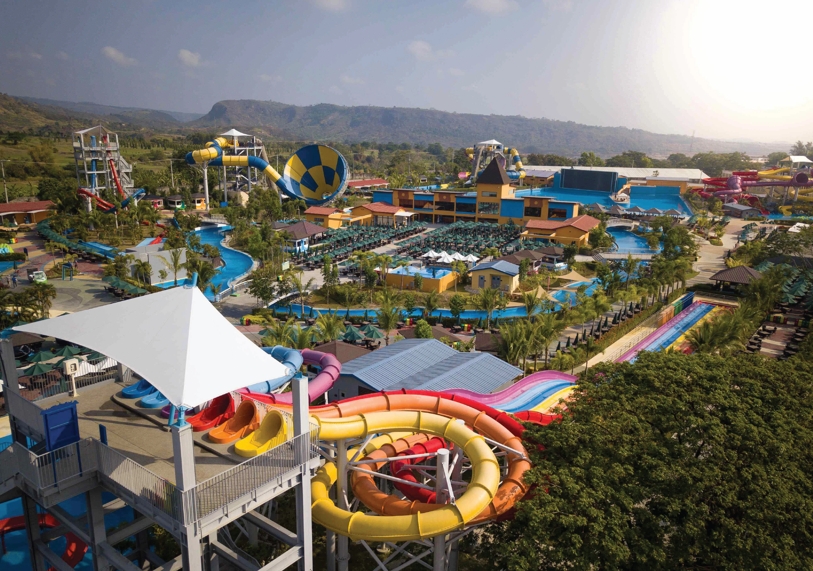

Last Visit
About Pampanga
Pampanga Overview
Pampanga, officially the Province of Pampanga (Kapampangan: Lalawigan ning Pampanga; Tagalog: Lalawigan ng Pampanga IPA: [pɐmˈpaŋɡa] pəm-PAHNG-ga), is a province in the Central Luzon region of the Philippines. Lying on the northern shore of Manila Bay, Pampanga is bordered by Tarlac to the north, Nueva Ecija to the northeast, Bulacan to the east, Manila Bay to the central-south, Bataan to the southwest and Zambales to the west. Its capital is the City of San Fernando. Angeles City is the largest LGU, but while geographically within Pampanga, it is classified as a first-class, highly urbanized city and has been governed independently of the province since it received its charter in 1964.
The name La Pampanga was given by the Spaniards, who encountered natives living along the banks (pampáng) of the Pampanga River. Its creation in 1571 makes it the first Spanish province on Luzon Island (Cebu in Visayas is older as it was founded by the Spaniards in 1565). The town of Villa de Bacolor in the province briefly served as the Spanish colonial capital when Great Britain invaded Manila as part of the Seven Years' War. At the eve of the Philippine Revolution of 1896, Pampanga was one of eight provinces placed under martial law for rebellion against the Spanish Empire; it is thus represented on the Philippine national flag as one of the eight rays of the sun.
Pampanga is served by Clark International Airport (formerly Diosdado Macapagal International Airport), which is in Clark Freeport Zone, some 16 kilometres (9.9 mi) north of the provincial capital. The province is home to two Philippine Air Force airbases: Basa Air Base in Floridablanca and the former United States Clark Air Base in Angeles. Due to its growing population and developments, the Clark Global City is now developed and is located in Clark Freeport Zone. In 2015, the province had 2,198,110 inhabitants, while it had 1,079,532 registered voters.
History of Pampanga
Ancient Pampanga's Territorial area included portions of the modern provinces of Tarlac, Bataan, Zambales, Nueva Ecija, Bulacan, Aurora, Quezon (including Polillo Islands), and Rizal, i.e. covered almost the entire Central Luzon (Pampanga also included portion of Metro Manila, which is Valenzuela to be exact, which was formerly known as Polo, then a town in Bulacan). When the Spanish arrived at Luzon they found Pampanga to be thickly populated with several towns and that there were 3 castles or forts protecting Pamapanga. Pampanga was re-organized as a province by the Spaniards on December 11, 1571. For better administration and taxation purposes, the Spanish authorities subdivided Pampanga into pueblos, which were further subdivided into districts (barrios) and in some cases into royal and private estates (encomiendas).
Due to excessive abuses committed by some encomenderos, King Philip II of Spain in 1574 prohibited the further awarding of private estates, but this decree was not fully enforced until 1620. In a report of Philippine encomiendas on June 20, 1591, Governor-General Gómez Pérez Dasmariñas reported to the Crown that La Pampanga's encomiendas were Bataan, Betis y Lubao, Macabebe, Candaba, Apalit, Calumpit, Malolos, Binto, Guiguinto, Caluya, Bulacan and Mecabayan. The encomiendas of La Pampanga at that time had eighteen thousand six hundred and eighty whole tributes.
Pampanga, which is about 850 square miles (2,200 km2) in area and inhabited by more than 1.5 million people, had its present borders drawn in 1873. During the Spanish regime, it was one of the richest Philippine provinces. Manila and its surrounding region were then primarily dependent on Kapampangan agricultural, fishery and forestry products as well as on the supply of skilled workers. As other Luzon provinces were created due to increases in population, some well-established Pampanga towns were lost to new emerging provinces in Central Luzon.
During the 17th century, The Dutch recruited men from Pampanga as mercenaries who served the Royal Netherlands East Indies Army, known as Papangers[6] part of the larger Mardijkers community. Their legacy can be found in North Jakarta, however, there are few traces of their descendants, except for a small community in Kampung Tugu.
The historic province of Bataan which was founded in 1754 under the administration of Spanish Governor-General Pedro Manuel Arandia, absorbed from the province of Pampanga the municipalities of Abucay, Balanga (now a city), Dinalupihan, Llana Hermosa, Orani, Orion, Pilar, and Samal.
During the British occupation of Manila (1762–1764), Bacolor became the provisional Spanish colonial capital and military base.
The old Pampanga towns of Aliaga, Cabiao, Gapan, San Antonio and San Isidro were ceded to the province of Nueva Ecija in 1848 during the term of Spanish Governor-General Narciso Claveria y Zaldua. The municipality of San Miguel de Mayumo of Pampanga was yielded to the province of Bulacan in the same provincial boundary configuration in 1848.
In 1860, the northern towns of Bamban, Capas, Concepcion, Victoria, Tarlac, Mabalacat, Magalang, Porac and Floridablanca were separated from Pampanga and were placed under the jurisdiction of a military command called Comandancia Militar de Tarlac. However, in 1873, the four latter towns were returned to Pampanga and the other five became municipalities of the newly created Province of Tarlac.



